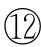

性是伴随人一生的重要功能，它能给人以欢乐，也能给人以痛苦，它可以带人进入崇高的情操境界，也能使之身败名裂。因此，人的性心理发展决定着他一生的幸福。要使人们获得最大的性欢乐，要使性最大限度地造福于人类，并预防和避免各种性问题、性障碍的发生，都有赖于性心理的健康发展。
约翰·莫尼提出性发育过程中要经历一系列关键期，或者说关口或岔路口，也就是说在性分化与性成熟过程中具有一定的可变性。他的性发育关键期理论认为先天的生物学与后天抚养过程中的因素是相辅相成、互相影响并共同作用的。这种作用将在某些特定时期起作用，故称之为关键期，即所谓“本性/关键期/教养”（nature/critical period/nurture）模式。它强调在性心理成熟过程的关键时期中存在的生物学因素（本性或先天）和文化环境因素（教养或后天）的共同作用与相互作用，以致对人的行为或性取向产生持久的记忆痕迹或印记作用。
关键期始自受精之日，一直持续到青春期之后。研究表明，出生前或刚刚出生的经历有可能助长某些行为趋势和性取向，而在成长和社会化过程中使之细化与固定，把出生前的因素都说成是生物学因素或把出生后的因素都说成是社会环境影响的结果都是不可取的。当一个人步入性分化的每道关口或岔路口时，他或她都具有双向选择。但是当一个人完全通过这个关口后，该关口就将关闭，于是其性分化或性成熟将固定于先前发展的方向。例如，一个人的性腺在胚胎发育期既可以向睾丸方向，也可以向卵巢方向发展，但一旦发展为睾丸就不可能再退回去发展为卵巢。在下一个关口关闭之前，其在这一阶段的发展便有可塑性。这些关口或关键期包括出生前和出生后的各6个。出生前有：①染色体性别；②性腺性别；③激素性别；④内生殖器形态性别；⑤外生殖器形态性别；⑥神经系统特别是大脑内编码。出生后有：⑦出生时的指定性别；⑧性脚本的形成；⑨性角色学习；⑩性别同一性（即心理性别或性别认同）； 性取向；青春期。
由于向出生后的学习和社会化过程中输入大脑的信息是来自各种感觉的，是经由大脑的学习和记忆功能予以加工的，据有些学者的观点，人类的大多数行为特别是性行为，就像在剧院上演的戏剧一样有一个脚本。脚本实际上是一个人在成长过程中把他或她认为适合的行为、态度、价值观和期望接受下来并予以内化的观念，它将成为其之后奉行的行为准则，所以脚本随性别的不同而有所不同，也随个体所处的文化环境而不同。一个性脚本具有5个关键变量：即一个人应该与谁发生性关系，一个人应该从事哪些性活动，性在什么时候是适宜的，什么是合适的性环境，一个人为什么要有性活动。
性别和性征的正常发育顺序为：①染色体：女性是46，XX，男性是46，XY；②性腺：Y染色体的性别决定基因影响原始性腺嵴向睾丸方向分化（6周半左右即可辨认），否则向卵巢方向分化；③胎儿内分泌：睾丸分泌抗副中肾管因子即苗勒氏管抑制因子，使苗勒氏管（副中肾管）退化，而睾丸分泌的睾酮则刺激男性内外性器官的发育（7周左右）。若胚胎中缺乏上述两种物质，那么无论遗传因子或性腺表现出的是男性或女性，最后均发育为形态上的女性；④内部形态：男女胎儿在7周左右分别开始形成完善的男女内生殖器结构；⑤外部形态：9周前胎儿外生殖器尚未分化出性别差异，外观可见尿生殖膜两侧 的阴唇阴囊隆起和尿生殖褶，以及位于其头端的生殖结节（初阴）。从第10周外阴开始向男性化发展，如初阴增长明显成阴茎，左右尿生殖褶在中线互相合并。12周后可认出形成的阴囊。女性外阴可见形成较小的阴蒂，大小阴唇开始形成。两性外生殖器的主要解剖部分均对应，如阴蒂与阴茎相对应，小阴唇和阴蒂包皮与阴茎皮肤相对应，大阴唇与阴囊相对应；⑥神经：胎儿内分泌可影响下丘脑神经核团的组成，睾酮使神经核团向男性化发展；⑦性别鉴定：出生时按其外生殖器判断和指定新生儿的性别；⑧抚养：从1.5岁～2岁是幼儿正常心理性别发育的最初阶段。大脑的男性化包括增强男性特征，抑制女性行为和神经内分泌特征（去女性化）的双重过程，而大脑的女性化则只需增强女性行为和神经内分泌特征。换句话说，大脑的女性化是自然过程，而大脑的男性化则需要外来因素的干扰，就是男性胎儿睾丸分泌出的睾酮。这种激素对大脑男性化的影响只会发生在某一特定阶段，即“关键期”。虽然女性胎儿体内也有睾酮，但其升高水平已过了“关键期”，故大脑不会向男性化方向发展。女胎在出生前的胎儿时期若受睾酮的影响，出生后可能出现男孩样性格；相反，若男性胎儿母亲患糖尿病使雌激素水平增高，受过高雌激素的影响，男孩出生后可能缺少冒险性和决断力，不喜欢户外活动也不易产生对异性的爱。
性别分化中的内分泌影响还可以从其他一些研究得到验证：例如多米尼加有些农村存在家族性的5α还原酶缺乏综合征，因此在对新生儿进行性别鉴定时，往往以他们发育缺陷的外生殖器指定为女性，但是到了青春期后，随着体内睾酮水平的增高，生殖器又向男性化发育，他们同时还经历了性心理的改变过程。因7岁以前都按女性抚养，故曾明认自己是女性，从7～12岁则开始出现性别问题上的烦恼，逐渐感到自己不像女性，而后认识到像男性，最终明确自己本来就应该是男性。由于这些男孩体内缺乏5α还原酶，不能将睾酮转化为双氢睾酮，而胎儿时期性器官发育实际上是依赖双氢睾酮的，于是新生儿出生时便出现外生殖器异常而被错认为女孩。等到青春期生殖器等可以对睾酮作出反应时，他们又迅速恢复男性的本来面目。由此可见，先天因素的影响远远超过后天抚养经历的影响（环境因素），但这些争论至今并无明确结论。